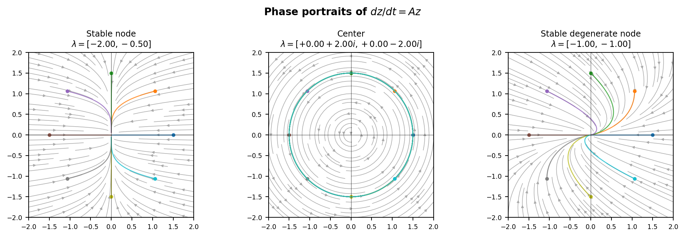
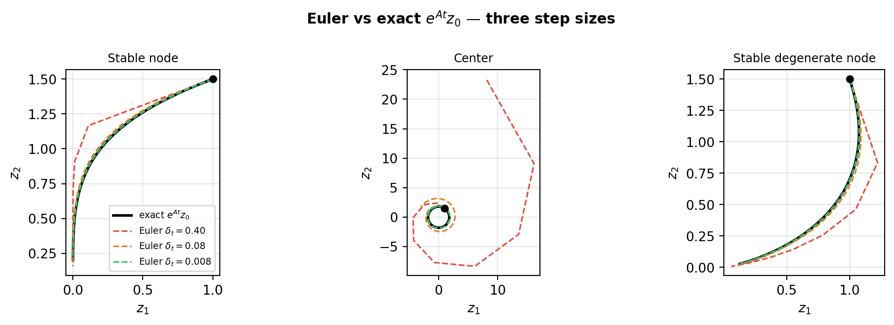

imports
import numpy as np
import torch
import matplotlib.pyplot as plt
from torchdiffeq import odeintFrom Euler steps to exp(At), and how to learn linear dynamics
Etienne Meunier
June 30, 2026
In this tutorial we study the linear ODE
\[\frac{dz}{dt} = Az, \quad z(0) = z_0\]
where \(A \in \mathbb{R}^{2 \times 2}\). The behavior of trajectories is entirely governed by the eigenvalues of \(A\). We illustrate with three canonical cases:
| Case | Matrix | Eigenvalues | Behavior |
|---|---|---|---|
| Stable node | \(A_1 = \begin{pmatrix}-2 & 0 \\ 0 & -0.5\end{pmatrix}\) | \(-2,\ -0.5\) | Trajectories collapse to the origin along eigenvector directions |
| Center | \(A_2 = \begin{pmatrix}0 & -2 \\ 2 & 0\end{pmatrix}\) | \(\pm 2i\) | Closed orbits, energy is conserved |
| Stable degenerate node | \(A_3 = \begin{pmatrix}-1 & 1 \\ 0 & -1\end{pmatrix}\) | \(-1\) (double) | Converges to origin with a \(t e^{-t}\) transient; non-diagonalizable |
A1 = torch.tensor([[-2.0, 0.0],
[ 0.0,-0.5]], dtype=torch.float64) # stable node
A2 = torch.tensor([[ 0.0,-2.0],
[ 2.0, 0.0]], dtype=torch.float64) # center
A3 = torch.tensor([[-1.0, 1.0],
[ 0.0,-1.0]], dtype=torch.float64) # stable degenerate node (Jordan block)
cases = [("Stable node", A1),
("Center", A2),
("Stable degenerate node", A3)]
For a real \(2 \times 2\) matrix, the characteristic polynomial is
\[\det(A - \lambda I) = \lambda^2 - \operatorname{tr}(A)\,\lambda + \det(A) = 0\]
with discriminant \(\delta = \operatorname{tr}(A)^2 - 4\det(A)\). The three cases are:
\[\lambda = \frac{\operatorname{tr}(A)}{2} \pm \begin{cases} \frac{1}{2}\sqrt{\delta} & \delta > 0 \quad \text{(two real eigenvalues)} \\ \frac{i}{2}\sqrt{-\delta} & \delta < 0 \quad \text{(complex conjugate pair)} \\ 0 & \delta = 0 \quad \text{(one repeated real eigenvalue)} \end{cases}\]
Complex eigenvalues always come as conjugate pairs \(a \pm bi\), so it is impossible to have one purely real and one purely imaginary eigenvalue for a real matrix.
We have two ways to propagate a state from \(z_0\) to time \(t\):
\[z(t) = \underbrace{\texttt{odeint}(A,\, z_0,\, t)}_{\text{numerical integration}} \qquad \longleftrightarrow \qquad z(t) = \underbrace{e^{At}\,z_0}_{\text{matrix exponential}}\]
What is the connection between the two? We denote by \(z_e\) the state obtained by the Euler scheme with step size \(\delta_t\):
\[z_e(\delta_t) = z_0 + \delta_t A z_0 = (I + \delta_t A)\,z_0\]
Applying the same step again from \(z_e(\delta_t)\):
\[z_e(2\delta_t) = (I + \delta_t A)\,z_e(\delta_t) = (I + \delta_t A)^2\,z_0 = z_0 + 2\delta_t A z_0 + \delta_t^2 A^2 z_0\]
By induction over \(K\) steps:
\[z_e(K\delta_t) = (I + \delta_t A)^K\,z_0\]
Setting \(t = K\delta_t\) (i.e. \(K = t/\delta_t\)) and taking \(\delta_t \to 0\):
\[z_e(t) = \left(I + \frac{t}{K} A\right)^K z_0 \xrightarrow[K \to \infty]{} e^{At}\,z_0\]
This is exactly the standard limit definition of the matrix exponential. The matrix exponential is the continuous limit of the Euler scheme — accuracy degrades as \(\delta_t\) grows.
z0 = torch.tensor([1.0, 1.5], dtype=torch.float64)
T = 4.0
t_ref = torch.linspace(0, T, 500, dtype=torch.float64)
# exact solution via matrix exponential for each t
def exact(A, t, z0):
return (torch.linalg.matrix_exp(A[None] * t[:, None, None]) @ z0).numpy()
# euler with K steps
def euler(A, t_grid, z0):
return odeint(lambda t, z: A @ z, z0, t_grid, method='euler').numpy()
step_sizes = {f"$\\delta_t={T/10:.2f}$": torch.linspace(0, T, 10, dtype=torch.float64),
f"$\\delta_t={T/50:.2f}$": torch.linspace(0, T, 50, dtype=torch.float64),
f"$\\delta_t={T/500:.3f}$": torch.linspace(0, T, 500, dtype=torch.float64)}
colors_euler = ["#e74c3c", "#e67e22", "#2ecc71"]
fig, axes = plt.subplots(1, 3, figsize=(11, 3.5))
for ax, (title, A) in zip(axes, cases):
z_ex = exact(A, t_ref, z0)
ax.plot(z_ex[:,0], z_ex[:,1], 'k-', lw=2, label='exact $e^{At}z_0$')
for (label, t_grid), color in zip(step_sizes.items(), colors_euler):
z_eu = euler(A, t_grid, z0)
ax.plot(z_eu[:,0], z_eu[:,1], '--', color=color, lw=1.2, label=f'Euler {label}')
ax.plot(*z0.numpy(), 'ko', markersize=5)
ax.set_title(title, fontsize=9)
ax.set_xlabel('$z_1$'); ax.set_ylabel('$z_2$')
ax.set_aspect('equal'); ax.grid(True, alpha=0.3)
axes[0].legend(fontsize=7, loc='best')
fig.suptitle('Euler vs exact $e^{At}z_0$ — three step sizes', fontsize=11, fontweight='bold')
plt.tight_layout()
plt.show()
Computing \(e^{At}z_0\) is the inner loop of both simulation and learning — every gradient step requires evaluating it, possibly for many values of \(t\) or many initial conditions \(z_0\). The right method depends on three questions:
We compare four methods on these axes. All code uses a shared setup:
If \(A = VDV^{-1}\), then \(e^{At} = V e^{Dt} V^{-1}\), where \(e^{Dt}\) is cheap to compute (diagonal).
For non-diagonalizable \(A\) this fails; Schur decomposition is the fallback.
L, V = torch.linalg.eig(A_ex)
assert torch.linalg.cond(V) < 1e10, 'Matrix A is not diagonalizable'
# Note that V and L entries are potentially complex, although z_t are real in any way as A is real entry
# Thus to allow computation you need to convert the initial condition to complex and then you can safely convert back to real
z_t = (V @ torch.diag(torch.exp(L * t_ex)) @ torch.linalg.inv(V) @ z0_ex.cdouble()).real✓ once you have computed the diagonal form you can evaluate the exponential for free for any \(z_0\) and \(t\)
✗ \(A\) needs to be diagonalizable
Approximates \(e^{At}\) as a ratio of matrix polynomials with a scaling-and-squaring step for large \(\|At\|\).
✓ works for any matrix (even non-diagonalizable)
✓ once you have computed \(e^{At}\) you can evaluate \(e^{At}z_0\) for free for any \(z_0\)
✗ need to restart the approximation for every new \(t\)
We remember that :
\[ \exp(At)z_0 = \sum_{k=0}^{\infty} \frac{1}{k!} A^k t^k z_0 \]
And that the terms of the sum eventually decay (as \(k\) increases the \(k!\) term dominates \(\|A^k z_0\|_2 \leq \sigma_{\max}^k \|z_0\|_2\))
Thus, rather than forming the full \(n \times n\) matrix \(e^{At}\), we could build a basis as \(\mathcal{K}_m = \text{span}\{z_0,\, Az_0,\, A^2z_0,\,\ldots\}\) of dimension \(m \ll n\) and compute :
\[e^{At}z_0 \approx \sum_{j=0}^{M} \frac{1}{j!} K_j t^j\]
This is the general idea, in practice, the Krylov method builds an orthonormal basis of \(\mathcal{K}_m\) to avoid the numerical instability of summing the raw \(A^j z_0\) terms directly.
PyTorch currently has no built-in function for this, but we can use the one from scipy:
✓ works for any matrix (even non-diagonalizable)
✓ once you have computed the basis you can evaluate \(e^{At}z_0\) for free for any \(t\)
✗ need to rebuild the basis for every new \(z_0\)
Solves \(\dot{z} = Az\) by stepping through intermediate times from \(z_0\) to \(t\). Step size is constrained by the stiffness of \(A\) (ratio of largest to smallest \(|\lambda|\)). Naturally efficient for successive \(t\) values on the same trajectory since all intermediate states are already computed.
✓ works with \(\dot{z}(t) = A(t) z(t)\) (time-varying linear dynamics)
✓ works for any matrix (even non-diagonalizable), although slow if \(\kappa(A)\) is large
✗ need to restart for every new \(t\) and \(z_0\)
| Scenario | Diagonalization | Padé | Krylov | OdeInt |
|---|---|---|---|---|
| Many \(t\), many \(z_0\) | ✓ | ✗ | ✗ | ✗ |
| One \(t\), many \(z_0\) | ✓ | ✓ | ✗ | ✗ |
| Many \(t\), one \(z_0\) | ✓ | ✗ | ✓ | ✗ |
| Successive \(t\), one \(z_0\) | ✓ | ✗ | ✗ | ✓ |
flowchart LR
A["dz/dt = A·z"] --> B{"A constant?"}
B -- No --> C["odeint"]
B -- Yes --> D{"A large\nand sparse?"}
D -- Yes --> E{"Many z₀?"}
E -- Yes --> F["odeint"]
E -- No --> G["Krylov"]
D -- No --> H{"Many t or z₀?"}
H -- Yes --> I["Diagonalization"]
H -- No --> J["Padé"]